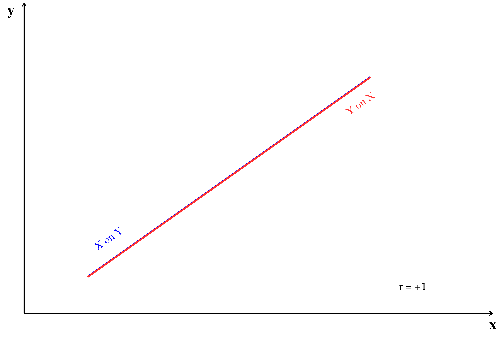

9 Regression analysis
Regression analysis is one of the most important tools in statistics, used to understand and quantify the relationships between variables. In essence, regression helps us answer questions such as, “How does a change in one factor (like fertilizer usage) affect another factor (like crop yield)?” It provides a mathematical framework to explore these relationships based on observed data.
Regression analysis involves two types of variables:
Dependent variable (y): This is the main outcome or the variable you are trying to predict or explain. For example, crop yield might be the dependent variable in an agricultural study. We usually denote dependent variable as y. The dependent variable is also known by various names such as the target variable, response variable, outcome variable, predicted variable, explained variable, regressand, y-variable, criterion variable, or output variable.
Independent variables (x): These are the factors that are thought to influence or predict changes in the dependent variable, such as the amount of water, fertilizer, or sunlight received by plants. The independent variable is also known as the predictor variable, explanatory variable, input variable, regressor, feature, covariate, x-variable, or control variable.
Why use regression analysis?
Regression analysis is particularly useful because it allows you to:
Quantify relationships: It measures how strongly one or more independent variables are associated with the dependent variable.
Predict outcomes: Once the relationship is understood, regression can be used to predict the dependent variable for new values of the independent variables.
Identify key factors: It can highlight which variables have the most significant impact on the dependent variable, guiding decision-making.
Control for multiple factors: By including several independent variables, regression helps isolate the effect of each variable while controlling for others.
Types of regression
There are different types of regression techniques, depending on the nature of the data and the relationship between variables:
Simple linear regression: Examines the relationship between one independent variable and one dependent variable, assuming a straight-line relationship.
Multiple linear regression: It is an extension of simple linear regression, allowing for the analysis of the relationship between one dependent variable (y) and multiple independent variables (more than one x). It is used when the outcome (dependent variable) is influenced by more than one factor (independent variables).
Nonlinear regression: Deals with situations where the relationship between variables is not a straight line.
Logistic regression: Used when the dependent variable is categorical, such as predicting whether a plant will survive (yes or no) based on environmental factors.
Practical applications
Regression analysis has a wide range of applications across fields:
In agriculture, it can be used to study the effect of irrigation, soil nutrients, and weather on crop yield.
In economics, it helps analyze the impact of income, education, and employment on consumer behavior.
In medicine, regression can predict health outcomes based on patient characteristics.
By the end of this chapter, you will learn how to perform regression analysis, interpret its results, and understand its assumptions and limitations. This will enable you to use regression as a powerful tool for making informed decisions and predictions.
9.1 Simple linear regression
Regression can be simply defined as a technique of fitting best line or line of best fit to estimate value of one variable on the basis of another variable. Now what is a best line? or line of best fit?. To understand this concept better, consider the data presented in Table 8.2, which shows the average daily soil moisture content and the corresponding monetary yield from crops in Example 8.2 of Section 8.2. This example helps visualize how the relationship between two variables—soil moisture content (independent variable) and crop yield (dependent variable).
We can use regression analysis to answer the following questions. What will be the crop yield in rupees when soil moisture content is maintained at 20%?. What is the functional form of relationship between soil moisture content and monetary crop yield?.
Refer to the scatter diagram of Table 8.2 in Figure 8.3. To represent the relationship between soil moisture content and monetary crop yield, we might attempt to draw a line, as illustrated in Figure 9.1. However, as shown in Figure 9.1, it’s possible to draw numerous lines through the data points. This raises the question: which line is the best fit?
The best fit line is defined as the one that minimizes the distances between the observed data points and the line itself. These distances, which represent how far each data point is from the line, are minimized collectively using a specific criterion. The regression technique provides a systematic approach to determine and draw this best fit line. Before diving further into regression, it is essential to understand the concepts of error and residuals, which play a critical role in determining the best fit line. The entire topic of regression is on how to draw a best fit line?.
9.1.1 Error and residual
In regression analysis, an error represents the difference between an observed value (a data point) and the true regression line, which reflects the actual relationship between the dependent and independent variables in the population. Since the true regression line is based on the entire population and is usually unknown, the error is a theoretical concept that cannot be directly calculated.
A residual is the difference between an observed value and the value predicted by a regression line based on sample data. Specifically, for a given data point, the residual is calculated as the observed value minus the predicted value from the regression line. Residuals are measurable because they are derived from the observed data and the regression line that is obtained using the sample. Unlike errors, which are theoretical and represent deviations from the true underlying model, residuals provide a practical estimate of these deviations, allowing us to assess the goodness of fit and identify any patterns or discrepancies in the model.
In essence, a residual serves as an estimate of the error. While errors represent the deviation from the actual true value, residuals reflect the discrepancy between observed data and the fitted model. From Figure 9.2 you can see the residual \(e_i\) of an i^th observation in a fitted regression line.
The distance of \(i^{th}\) observation (\(e_i\)) from the fitted line can be considered as the residual (error). Best fit line can be obtained by minimizing this distance. This can be achieved using the mathematical technique “principle of least squares” discussed in Section 9.1.3. Before going to identify a best fit line on should know the concept of a straight line.
9.1.2 Straight lines
A straight line is the simplest figure in geometry. Mathematical equation of a straight line is
\[Y = \alpha + \beta X \tag{9.1}\]
Two important features of a line intercept (\(\alpha\)) and slope(\(\beta\)). \(\alpha\) is the Y-intercept, the intercept of a line is the y-value of the point where it crosses the y-axis. \(\beta\) is the slope of a line, which is a number that measures its “steepness”. It is the change in Y for a unit change in X along the line. In regression \(\beta\) is called as regression coefficient explained in Section 9.1.4.
Intercept and slope

\(\alpha\) and \(\beta\) can be considered as a finger print of a line; with these values we can easily identify the line. So now our problem is simple, to find a line of best, estimate \(\alpha\) and \(\beta\), such that error ei of each observation is minimized. For that we use the method of least squares.
9.1.3 Method of least squares
On considering the error term \(e_i\); equation of a straight line is
\[y_i = \alpha +\beta x_i + e_i \tag{9.2}\]
Where \(e_i\) is the ith error term corresponding to \(y_i\), i =1, 2, …, n
One way to obtain line of best fit is by estimating \(\alpha\) and \(\beta\) by minimizing error sum \(\sum_{i = 1}^{n}{e_i}\). By theorem \(\sum_{i = 1}^{n}{e_i} = 0\). So \(\alpha\) and \(\beta\) are estimated by minimizing \(\sum_{i = 1}^{n}{e_i}^2\). The term \(\sum_{i = 1}^{n}e_i^2\) is called as error sum of squares. As we are minimizing the sum of the squares of error term the process is known by the name principle of least squares.
Principle of least squares
Principle of least squares is the statistical method used to determine a line of best fit by minimizing the sum of squares of the error term i.e minimizing \(\sum_{i = 1}^{n}{e_i}^2\).
Consider Equation 9.2
\[y_i = \alpha +\beta x_i + e_i\]
\[e_i = y_i -(\alpha +\beta x_i) \tag{9.3}\]
\[e_i^2 = [y_i -(\alpha +\beta x_i)]^2 \tag{9.4}\]
\[\sum_{i = 1}^{n}e_i^2 = \sum_{i = 1}^{n}[y_i -(\alpha +\beta x_i)]^2 \tag{9.5}\]
we want to minimize Equation 9.5 and estimate \(\alpha\) and \(\beta\). \(\sum_{i = 1}^{n}e_i^2\) can be minimized by taking derivative with respect to \(\alpha\) and \(\beta\) and equating to zero. On doing so we will get two equations, these equations are termed as normal equations and solving those normal equations will give the formulas for estimating \(\alpha\) and \(\beta\).
Differentiating \(E=\sum_{i = 1}^{n}e_i^2\) with respect to \(\alpha\) and equating to 0.
\[\frac{\partial E}{\partial \alpha} = \sum_{i=1}^n 2 \left[ y_i - (\alpha + \beta x_i) \right](-1) \tag{9.6}\]
\[= -2 \sum_{i=1}^n \left[ y_i - \alpha - \beta x_i \right] \tag{9.7}\]
equating the derivative in Equation 9.7 to \(0\) and on simplifying:
\[\sum_{i=1}^n \left[ y_i - \alpha - \beta x_i \right] = 0 \tag{9.8}\]
expand the summation in Equation 9.8:
\[=\sum_{i=1}^n y_i - n\alpha - \beta \sum_{i=1}^n x_i = 0 \tag{9.9}\]
on rearranging Equation 9.9 you will get the first normal equation.
\[\sum_{i=1}^n y_i =n\alpha + \beta \sum_{i=1}^n x_i \tag{9.10}\]
Differentiating \(E=\sum_{i = 1}^{n}e_i^2\) with respect to \(\beta\):
\[\frac{\partial E}{\partial \beta} = \sum_{i=1}^n 2 \left[ y_i - (\alpha + \beta x_i) \right](-x_i) \tag{9.11}\]
\[= -2 \sum_{i=1}^n x_i \left[ y_i - \alpha - \beta x_i \right] \tag{9.12}\]
equating the derivative in Equation 9.12 to \(0\) and on simplifying:
\[\sum_{i=1}^n x_i \left[ y_i - \alpha - \beta x_i \right] = 0 \tag{9.13}\]
expand the summation in Equation 9.13:
\[=\sum_{i=1}^n x_i y_i - \alpha \sum_{i=1}^n x_i - \beta \sum_{i=1}^n x_i^2 = 0 \tag{9.14}\]
on rearranging Equation 9.14 you will get the second normal equation.
\[\sum_{i=1}^n y_i x_i = \alpha \sum_{i=1}^n x_i + \beta \sum_{i=1}^n x_i^2 \tag{9.15}\]
On solving normal equations Equation 9.10 and Equation 9.15, we derive the equations to estimate \(\alpha\) and \(\beta\), which are considered population parameters. Since these parameters are usually unknown, we estimate them using equations derived from sample data. The estimated values of \(\alpha\) and \(\beta\) are denoted as \(\hat{\alpha}\) and \(\hat{\beta}\), where the hats indicate that they are sample-based estimates. These are pronounced as “alpha cap” and “beta cap,” respectively, and are used as approximations of the true population parameters.
9.1.4 Regression coefficient
The regression coefficient, \(\beta\) in linear regression, represents the slope of the regression line. It quantifies the relationship between the independent variable (\(x\)) and the dependent variable (\(y\)). Specifically, \(\beta\) indicates the expected change in \(y\) for a one-unit increase in \(x\), holding other factors constant. Regression coefficients can take any real value, ranging from \(-\infty\) to \(+\infty\), depending on the nature of the relationship between the variables. A positive \(\beta\) implies a direct relationship (as \(x\) increases, \(y\) increases), while a negative \(\beta\) implies an inverse relationship (as \(x\) increases, \(y\) decreases). A coefficient of \(0\) suggests no linear relationship between the variables. The magnitude of \(\beta\) reflects the strength of the association, with larger absolute values indicating stronger relationships. Equation 9.16 and Equation 9.16 for the calculation of estimate of \(\beta\) is obtained by solving normal equations Equation 9.10 and Equation 9.15. Equation 9.16 can be used for hand calculations.
\[\hat{\beta}=\frac{\sum_{i = 1}^{n}{y_{i}x_{i} - \frac{\sum_{i = 1}^{n}{y_{i}\sum_{i = 1}^{n}x_{i}}}{n}}}{\sum_{i = 1}^{n}x_{i}^{2} - \frac{\left( \sum_{i = 1}^{n}x_{i} \right)^{2}}{n}} \tag{9.16}\]
Equation 9.16 can be written as
\[\hat{\beta} =\frac{cov(x,y)}{var(x)} \tag{9.17}\]
9.1.5 Intercept
The intercept, often denoted as \(\alpha\) in linear regression, represents the value of the dependent variable \(y\) when the independent variable \(x\) is equal to zero. It is the point at which the regression line crosses the \(y\)-axis. The intercept provides a baseline value for the dependent variable before any influence from the independent variable is considered. The intercept can take any real value (\(-\infty\) to \(+\infty\)), and its meaning depends on the specific context of the data. In some cases, it may not have a practical interpretation, especially if \(x = 0\) is not within the range of observed data. Equation 9.18 for estimating \(\alpha\) is obtained by solving normal equations Equation 9.10 and Equation 9.15.
\[\hat{\alpha} =\overline{y}-\hat{\beta}.\overline{x} \tag{9.18}\]
where \(\overline{y}\) = mean of \(y\); \(\overline{x}\) = mean of \(x\)
Once the estimates of \(\alpha\) and \(\beta\), which are denoted as \(\hat{\alpha}\) and \(\hat{\beta}\) respectively are obtained using Equation 9.17 and Equation 9.18. The estimated regression line can be written as:
\[y =\hat{\alpha}+ \hat{\beta} x \tag{9.19}\]
9.1.6 Assumptions
The goal of linear regression is to estimate the coefficients of the regression equation, which help explain how changes in the independent variables affect the dependent variable. However, for the results of a regression analysis to be reliable and meaningful, certain underlying assumptions must be met. These assumptions ensure that the estimates are accurate, the predictions are unbiased, and the conclusions drawn from the model are valid. Before conducting a regression analysis, it is crucial to understand and verify these assumptions to avoid misleading results.These assumptions are:
Linearity
The relationship between the independent variable(s) and the dependent variable is linear. This means that the changes in the dependent variable are proportional to changes in the independent variable(s).Independence
The observations in the dataset are independent of each other. Additionally, the residuals (errors) are assumed to be independent.Homoscedasticity
The variance of the residuals is constant across all levels of the independent variable(s). In other words, the spread of the residuals should remain consistent and not show patterns of increasing or decreasing variance.Normality of residuals
The residuals (errors) are normally distributed. This is particularly important for hypothesis testing and constructing confidence intervals. Normality assumption doesnot much influence the estimation of regression coefficient.No multicollinearity
In the case of multiple regression, the independent variables should not be highly correlated with each other, as multicollinearity can distort the estimates of regression coefficients.No autocorrelation
There should be no autocorrelation in the residuals. This means that the residuals of one observation should not be correlated with the residuals of another.Correct model specification
The model should include all relevant variables and exclude irrelevant ones. The functional form of the relationship between variables should be correctly specified.
Violations of these assumptions can lead to biased, inconsistent, or inefficient estimates, affecting the validity of the regression analysis.
The essence of the assumptions in linear regression can be summarized as \(e \sim \text{i.i.d.}(0, \sigma^2)\). This denotes that the errors are independent and identically distributed (i.i.d.), with a mean of zero and a constant variance \(\sigma^2\). Independence ensures that the error for one observation neither depends on nor influences the error for another. Identically distributed means that all errors are drawn from the same probability distribution, without variation across observations. A mean of zero ensures that the errors do not introduce systematic bias into the model’s predictions. Additionally, the constant variance (homoscedasticity) implies that the errors maintain a consistent level of variability across all values of the independent variable(s).
9.2 Two lines of regression
Consider the data presented in Table 8.2, which shows the average daily soil moisture content and the corresponding monetary yield from crops in Example 8.2 of Section 8.2. For the data we can draw two lines of regression interchanging variables in X and Y axis as shown in Figure 9.4.
From Figure 9.4 it is clear that two lines of regression that of \(y\) on \(x\) and \(x\) on \(y\) is possible.
Regression of \(y\) on \(x\)
Consider the two variables \(x\) and \(y\), if you are considering \(y\) as dependent variable and \(x\) as independent variable then your equation is:
\[y = \alpha + \beta_{yx}x \tag{9.20}\]
This is used to predict the unknown value of variable \(y\) when value of variable \(x\) is known. Usually \(\beta\) here is denoted as \(\beta_{yx}\) and it is obtained using Equation 9.21.
\[\beta_{yx} =\frac{cov(x,y)}{var(x)} \tag{9.21}\]
Regression of \(x\) on \(y\)
Consider the two variables \(x\) and \(y\), if you are considering \(x\) as dependent variable and \(y\) as independent variable then your equation is:
\[x = \alpha_1 + \beta_{xy}.x \tag{9.22}\]
This is used to predict the unknown value of variable \(x\) when value of variable \(y\) is known. Usually \(\beta\) here is denoted as \(\beta_{xy}\) and it is obtained using Equation 9.23.
\[\beta_{xy} =\frac{cov(x,y)}{var(y)} \tag{9.23}\]
You can see from Equation 9.21 and Equation 9.23 both the regression coefficients were different. It depends on the experimenter to choose dependent and independent variable. In the Example 8.2 there may be situation that considering moisture as dependent variable is meaningless, i.e. it depends on the fact that what is the usefulness in predicting soil moisture based on monetary crop yield?. So the selection of dependent and independent variable is entirely the discretion of experimenter based on the objective of his study.
9.2.1 Properties of regression coefficients
- The correlation coefficient between \(x\) and \(y\) denoted as \(r_{xy}\) is the geometric mean of the two regression coefficients \(\beta_{yx}\) and \(\beta_{xy}\)
\[r_{xy} = \sqrt{\beta_{yx}.\beta_{xy}} \tag{9.24}\]
Regression coefficients are independent of change of origin but not of scale. Regression coefficients exhibit specific behaviors under transformations of the variables \(x\) or \(y\), particularly when there are changes in origin or scale. They are independent of a change in origin for both \(x\) and \(y\). This means that adding or subtracting a constant to either variable (e.g., transforming \(x\) to \(x'= x + c\) or \(y\) to \(y'= y + c\), where \(c\) is a constant) does not affect the slope \(\beta\) of the regression line. The slope depends on the relative differences between values, which remain unchanged by shifts in origin. However, changes in origin will affect the intercept \(\alpha\) by adjusting it to accommodate the shift in \(y\). In contrast, regression coefficients are not independent of changes in scale. When either \(x\) or \(y\) is multiplied or divided by a constant (e.g., \(x'= kx\) or \(y'= ky\), where \(k\) is a non-zero constant), the slope \(\beta\) changes proportionally. Specifically, the regression coefficient is inversely proportional to the scale factor for \(x\) because scaling affects the covariance and variance of the variables. Similarly, scaling \(y\) affects both the slope and the intercept, as the entire regression equation is scaled by the factor \(k\). Understanding these effects is crucial for accurately interpreting regression results, especially when transformations are applied during data preprocessing.
If one regression coefficient is greater than unity, then the other must be less than unity but not vice versa. i.e. both the regression coefficients can be less than unity but both cannot be greater than unity, i.e. if \(\beta_{yx} >1\) then \(\beta_{xy} <1\) and if \(\beta_{xy} >1\), then \(\beta_{yx} <1\).
Also if one regression coefficient is positive the other must be positive (in this case the correlation coefficient is positive) and if one regression coefficient is negative the other must be negative (in this case the correlation coefficient is negative). This relationship arises because the regression coefficients and the correlation coefficient share the same sign, reflecting the direction of the association between the two variables.
The range of regression coefficients is \(- \infty\) to \(+ \infty\).
If the variables (\(x\) ) and (\(y\)) are independent, the regression coefficients are zero. This is referred to as the independence property of regression coefficients.
9.2.2 Properties of regression lines
Regression lines minimize the sum of squared deviations of observed values from the predicted values, ensuring the best possible fit.
The regression lines intersect at the mean values of \(x\) and \(y\) i.e., at (\(\overline{x}\),\(\overline{y}\))
The slopes of the regression lines are related to the correlation coefficient r. If r=0, the lines are perpendicular, indicating no linear relationship.
The position of regression lines is closely related to the strength of the correlation between \(x\) and \(y\). As shown in Figure 9.5, the placement of the two lines changes with the correlation value, demonstrating how the relationship between \(x\) and \(y\) influences the regression line’s position.

9.3 Uses of regression
- Prediction
Regression analysis is used to predict the value of a dependent variable (\(y\)) based on one or more independent variables (\(x\)). Examples in agricultural research include:- Predicting crop yield based on weather parameters such as temperature, rainfall, and humidity.
- Estimating soil nutrient levels using remote sensing data or environmental variables.
- Forecasting pest or disease outbreaks based on climatic and ecological conditions.
- Predicting crop yield based on weather parameters such as temperature, rainfall, and humidity.
- Identify the strength of relationships
Regression helps quantify the strength of the relationship between variables. This is essential in agricultural research to identify influential factors. Examples include:- Determining the effect of fertilizer dosage on crop yield.
- Analyzing the relationship between irrigation frequency and plant growth.
- Understanding the impact of livestock feed composition on milk production.
- Determining the effect of fertilizer dosage on crop yield.
- Forecast effects or impact of changes
Regression models allow researchers to evaluate how changes in one or more independent variables affect the dependent variable. For example:- Assessing how seed quality impacts overall harvest productivity.
- Analyzing the effects of varying water availability on crop output in drought-prone areas.
- Estimating the economic benefits of adopting precision farming techniques.
- Assessing how seed quality impacts overall harvest productivity.
- Predict Trends and Future Values
Regression is valuable for modeling trends and forecasting future values, aiding in strategic planning and policy-making. Applications include:- Predicting future crop yields under different climate change scenarios.
- Estimating long-term price trends for agricultural commodities such as rice, wheat, or coffee.
- Forecasting the adoption rates of new agricultural technologies among farmers.
- Predicting future crop yields under different climate change scenarios.
Multiple regression is an extension of simple linear regression that models the relationship between a dependent variable and two or more independent variables. It allows researchers to account for the combined effect of multiple factors on an outcome, making it particularly useful in agricultural research. For instance, crop yield can be predicted based on a combination of variables such as soil nutrients, rainfall, temperature, and fertilizer application.
In a multiple regression model, the relationship between the dependent variable \(y\) and independent variables \(x_1, x_2, \dots, x_n\) is expressed as:
\[y = \alpha + \beta_1 x_1 + \beta_2 x_2 + \dots + \beta_n x_n + e \tag{9.25}\]
Where:
- \(y\): Dependent variable (response).
- \(\alpha\): Intercept (value of \(Y\) when all \(X\) values are zero).
- \(\beta_1, \beta_2, \dots, \beta_n\): Coefficients representing the effect of each independent variable on \(y\).
- \(x_1, x_2, \dots, x_n\): Independent variables (predictors).
- \(e\): Error term accounting for variability not explained by the predictors.
Example 9.1: We will be using the data presented in Table 8.2, which shows the average daily soil moisture content and the corresponding monetary yield from crops in Example 8.2 of Section 8.2 to demonsrtate how regression analysis can be used to answer the following questions.
What is the functional form of relationship between soil moisture and monetary crop yield?
What will be the estimated monetary crop yield when average daily soil moisture is maintained around 20%?
Solution 9.1:
Fit a model considering monetary crop yield as dependent variable (\(y\)) and average soil moisture as independent variable (\(x\)). Fitting a model means estimating \(\beta\) and \(\alpha\) using equation.
After fitting the model put 20 in the \(x\) value you will get the predicted \(y\) value
| Sl No. | Soil moisture (\(x\)) | Crop yield in Rs(\(y\)) | \((x_{i}-\overline{x})\) | \((y_{i}-\overline{y})\) | \((x_{i}-\overline{x})(y_{i}-\overline{y})\) | \((x_{i}-\overline{x})^2\) |
|---|---|---|---|---|---|---|
| 1 | 14.2 | 215 | -4.48 | -187.42 | 838.69 | 20.03 |
| 2 | 16.4 | 325 | -2.28 | -77.42 | 176.12 | 5.18 |
| 3 | 11.9 | 185 | -6.78 | -217.42 | 1473.00 | 45.90 |
| 4 | 15.2 | 332 | -3.48 | -70.42 | 244.70 | 12.08 |
| 5 | 18.5 | 406 | -0.18 | 3.58 | -0.63 | 0.03 |
| 6 | 22.1 | 522 | 3.43 | 119.58 | 409.57 | 11.73 |
| 7 | 19.4 | 412 | 0.73 | 9.58 | 6.95 | 0.53 |
| 8 | 25.1 | 614 | 6.43 | 211.58 | 1359.42 | 41.28 |
| 9 | 23.4 | 544 | 4.73 | 141.58 | 668.98 | 22.33 |
| 10 | 18.1 | 421 | -0.58 | 18.58 | -10.69 | 0.33 |
| 11 | 22.6 | 445 | 3.93 | 42.58 | 167.14 | 15.41 |
| 12 | 17.2 | 408 | -1.48 | 5.58 | -8.24 | 2.18 |
| SUM | 224.1 | 4829 | 0.00 | 0.00 | 5325.03 | 176.98 |
\(n\) =12
\[mean,\overline{x} = \ \frac{224.1}{12} = 18.675\]
\[mean,\overline{y} = \ \frac{4829}{12} = 402.416\]
\[cov (x,y) =\frac{1}{n}\sum_{i = 1}^{n}{\left( x_{i} - \overline{x} \right)\left( y_{i} - \overline{y} \right)} = \frac{5325.03}{12} = 443.752\]
variance of \(x\):
\[var\left( x \right) = \ \frac{1}{n}\sum_{i = 1}^{n}\left( x_{i} - \overline{x} \right)^{2} = \frac{176.983}{12} = 14.7485\] now using Equation 9.17
\[\hat{\beta} =\frac{cov(x,y)}{var(x)}\]
\[\hat{\beta} =\frac{443.752}{14.7485} =30.088\] using Equation 9.18
\[\hat{\alpha} =\overline{y}-\hat{\beta}.\overline{x}\]
\[\hat{\alpha} = 402.416 - 30.088\left( 18.675 \right) = \ - 159.477\]
So our estimated model is
\[y = \ - 159.477 + 30.088x\]
\[\text{crop yield in Rs} =- 159.477 + 30.088\text{(soil moisture)}\]
for soil moisture content at 20%, i.e. \(x = 20\)
\[y = \ - 159.477 + 30.088(20)\] = 442.28
So the predicted monetary yield in rupees at a average soil moisture of 20% is \(442.283\)
9.4 Correlation and regression
Correlation and regression are fundamental concepts in statistics, often used to explore and model relationships between variables. While both techniques examine how variables relate to one another, they differ in their purpose, interpretation, and methodology. Correlation focuses on measuring the strength and direction of an association between two variables, without assuming causation. In contrast, regression goes a step further by modeling the relationship, enabling predictions of one variable based on the other(s). The Table 9.2 below provides a detailed comparison of these two approaches, helping to clarify their unique characteristics and applications.
| Item | Correlation | Regression |
|---|---|---|
| Definition | Measures the strength and direction of the relationship between two variables. | Models the relationship between a dependent variable and one or more independent variables. |
| Objective | To quantify the degree of association between variables. | To predict the value of the dependent variable based on the independent variable(s). |
| Causation | Does not imply causation; it only measures association. Causation means changes in one variable cause changes in another. | Can imply causation if assumptions are met and the model is well-specified. |
| Equation | No equation is derived. | Derives an equation: \(y=\alpha + \beta x + e\). |
| Variables involved | Considers two variables at a time. | Can involve one or multiple independent variables to predict a dependent variable. |
| Symmetry | Correlation between (x) and (y) is the same as (y) and (x). | The regression coefficient of y on x is different from x on y. |
| Range | The correlation coefficient (r) ranges from -1 to 1. | Regression coefficients (\(\alpha, \beta\)) ranges from \(-\infty\) to \(+\infty\). |
| Units | Unit less measure. | Dependent on the units of the variables involved. |
| Purpose | To understand the strength of the relationship. | To predict outcomes or explain variability in the dependent variable. |
“Regression and study of heights”
The story of regression begins with Sir Francis Galton’s groundbreaking work on heredity in the late 19th century. While studying the heights of parents and their children, Galton noticed a fascinating pattern: tall parents tended to have slightly shorter children, and shorter parents tended to have slightly taller children. He called this phenomenon “regression toward the mean”, as the offspring’s heights seemed to move closer to the population average. This observation not only introduced the term “regression” but also inspired the development of statistical tools for studying relationships between variables. Galton’s work, later expanded by Karl Pearson, laid the foundation for modern regression analysis, which remains an essential technique in several fields ranging from agriculture to space exploration.
“Statistics is the art of never having to say you’re wrong”:-Robert P. Abelson